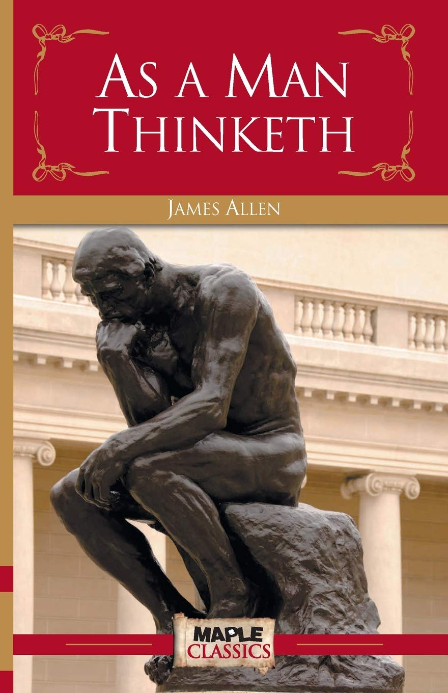

As a Man Thinketh is a self-help book by James Allen, published in 1903. It was described by Allen as "... [dealing] with the power of thought, and particularly with the use and application of thought to happy and beautiful issues. I have tried to make the book simple, so that all can easily grasp and follow its teaching, and put into practice the methods which it advises. It shows how, in his own thought-world, each man holds the key to every condition, good or bad, that enters into his life, and that, by working patiently and intelligently upon his thoughts, he may remake his life, and transform his circumstances. The price of the book is only one shilling, and it can be carried in the pocket." It was also described by Allen as "A book that will help you to help yourself", "A pocket companion for thoughtful people", and "A book on the power and right application of thought."
